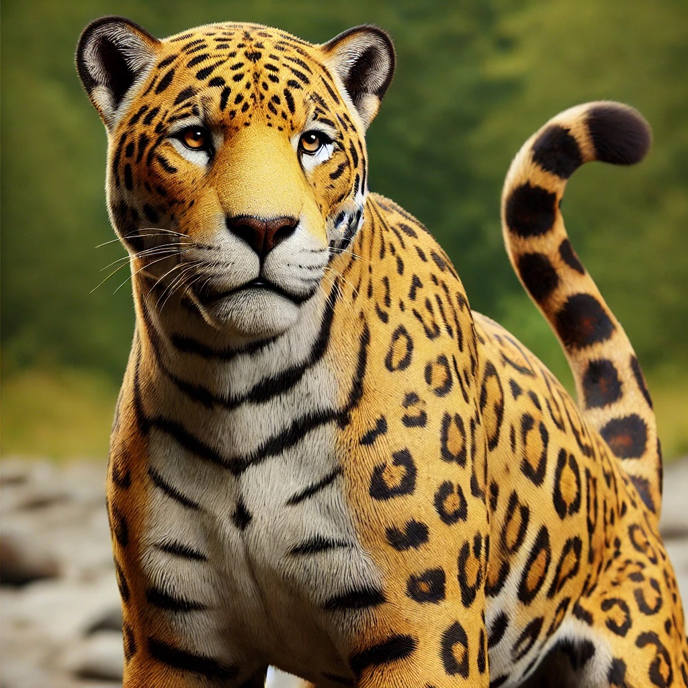
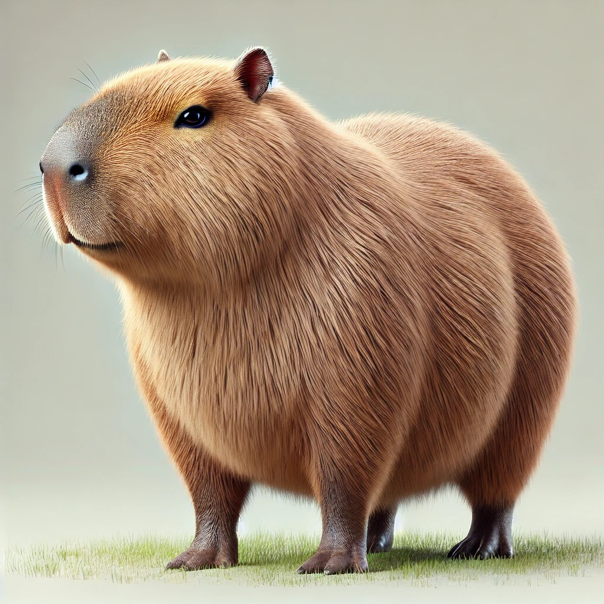
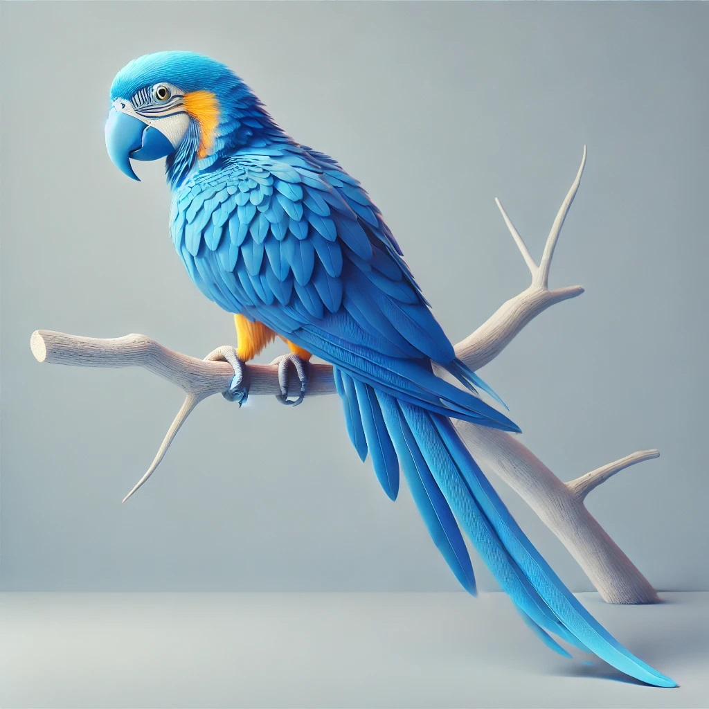
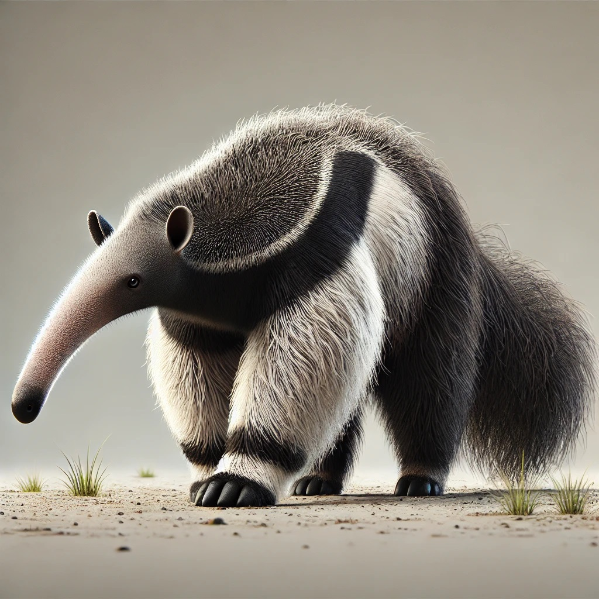

Onça pintada

A onça-pintada, o maior felino das Américas, é um símbolo da fauna brasileira. Com sua pelagem marcante e porte imponente, ela habita diversos biomas do país, desempenhando um papel fundamental na manutenção do equilíbrio ambiental.
Saiba Mais
Capivara

As capivaras são verdadeiros ícones da fauna brasileira! Conhecidas por serem os maiores roedores do planeta, essas criaturas habitam principalmente as regiões de planície, próximo a rios e lagos. São herbívoras e vivem em grupos sociais complexos, onde a cooperação e a comunicação são essenciais para sua sobrevivência. Sua importância ecológica é inegável, pois ajudam a dispersar sementes e contribuem para a manutenção do equilíbrio dos ecossistemas aquáticos.
Saiba Mais
Arara-azul

A arara-azul é uma ave exuberante e símbolo do Brasil. Com suas penas vibrantes e bico poderoso, ela habita as florestas tropicais da Amazônia. Essas aves são extremamente sociáveis e vivem em bandos, alimentando-se principalmente de frutos e sementes. Infelizmente, a destruição de seu habitat e o tráfico de animais as colocam em risco de extinção.
Saiba Mais
Tamanduá-bandeira

O tamanduá-bandeira é um animal único e fascinante. Com sua pelagem característica e focinho alongado, ele se alimenta de formigas e cupins. Esse mamífero habita os campos e savanas da América do Sul e desempenha um papel importante no controle das populações de insetos.
Saiba Mais